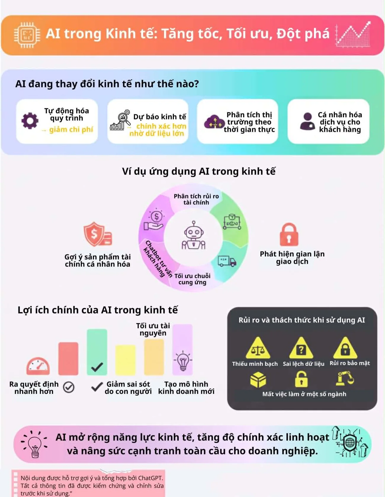
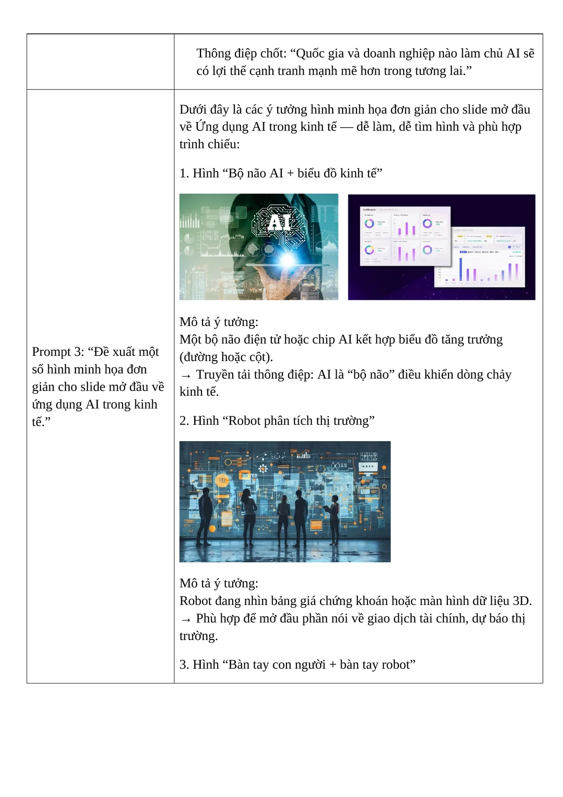
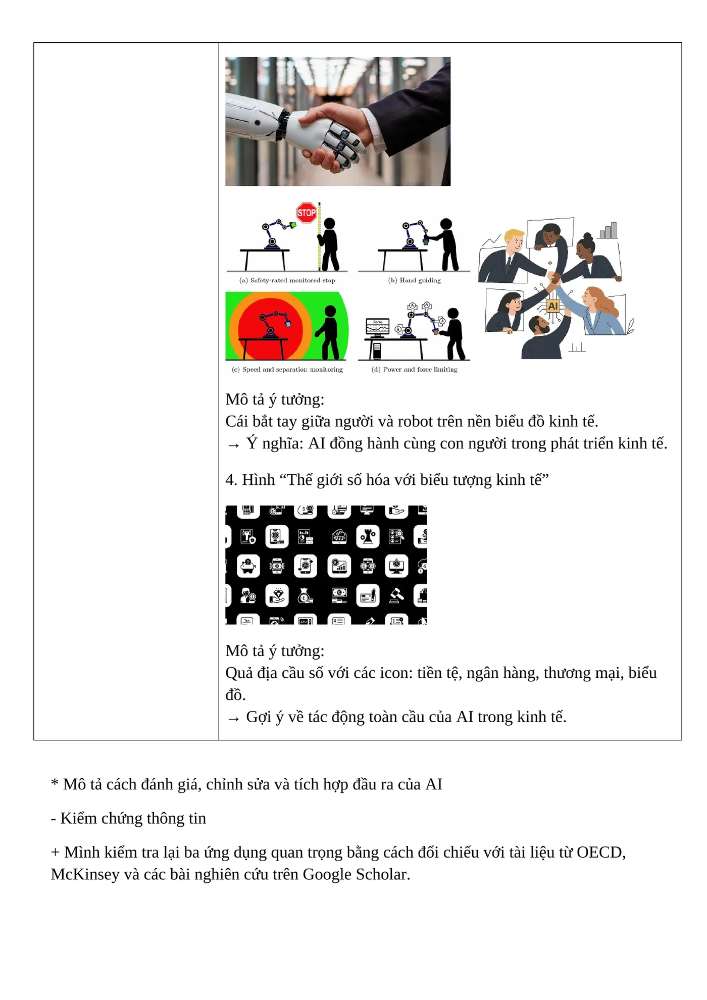

Năng lực cần hình thành
Phát triển kỹ năng sử dụng AI minh bạch, có trách nhiệm và phù hợp với liêm chính học thuật trong học tập, nghiên cứu.
Các bước thực hiện
Tìm hiểu nguyên tắc
Tổng hợp các điểm về minh bạch, không sao chép, trách nhiệm học thuật và giới hạn sử dụng AI.
Dùng AI hỗ trợ nội dung
Yêu cầu AI liệt kê ứng dụng, xây dựng dàn ý 5 phút và gợi ý hình minh họa.
Kiểm chứng và chỉnh sửa
Đối chiếu một số thông tin, thay ví dụ chung bằng trường hợp cụ thể và rút gọn dàn ý.
Tích hợp sản phẩm
Tổ chức nội dung thành ứng dụng - lợi ích - rủi ro - thông điệp và thiết kế infographic.
Ảnh minh họa từ sản phẩm
Nhấn vào ảnh để xem kích thước lớn.



Những gì đạt được
- Nhận thức AI là công cụ hỗ trợ, không thay thế tư duy cá nhân.
- Biết ghi nhận giới hạn của AI như sai lệch dữ liệu, thiếu nguồn và thiếu minh bạch.
- Xây dựng một sản phẩm có lưu ý rõ về việc ChatGPT hỗ trợ ý và tổng hợp.
- Hình thành bộ nguyên tắc cá nhân cho học tập và nghiên cứu.
Phân tích và hướng nâng cấp
Bộ nguyên tắc cá nhân khi sử dụng AI
- AI chỉ là công cụ hỗ trợ: lập luận và quyết định cuối cùng thuộc về người học.
- Kiểm chứng thông tin: đối chiếu nguồn đáng tin trước khi đưa vào sản phẩm.
- Không sao chép nguyên văn: đọc, hiểu, viết lại và bổ sung quan điểm cá nhân.
- Minh bạch cách sử dụng: ghi rõ AI hỗ trợ ở khâu nào khi nhiệm vụ yêu cầu.
- Tôn trọng bản quyền: kiểm tra quyền sử dụng hình ảnh, dữ liệu và nội dung.
- Bảo vệ dữ liệu: không nhập dữ liệu cá nhân, bí mật hoặc nhạy cảm vào công cụ.
- Chịu trách nhiệm: người nộp bài chịu trách nhiệm cho mọi nội dung và kết luận.
Thách thức đạo đức và giải pháp
| Thách thức | Rủi ro | Giải pháp |
|---|---|---|
| AI tạo thông tin sai | Lan truyền dữ liệu không chính xác. | Đối chiếu ít nhất hai nguồn và ưu tiên tài liệu gốc. |
| Thiếu minh bạch | Người đọc hiểu sai về mức đóng góp của tác giả. | Thêm tuyên bố sử dụng AI và lưu Prompt quan trọng. |
| Lệ thuộc vào AI | Suy giảm tư duy độc lập. | Tự lập dàn ý trước, dùng AI để phản biện hoặc mở rộng. |
| Rò rỉ dữ liệu | Mất quyền riêng tư hoặc vi phạm bảo mật. | Ẩn danh dữ liệu, không nhập thông tin nhạy cảm. |
Sản phẩm đầy đủ
Bản PDF bên dưới được chuyển trực tiếp từ báo cáo đã hoàn thành. Nếu trình duyệt không hiển thị khung xem trước, hãy dùng nút mở PDF.
Tệp PDF được lưu ngay trong thư mục website.Mở báo cáo PDF ↗